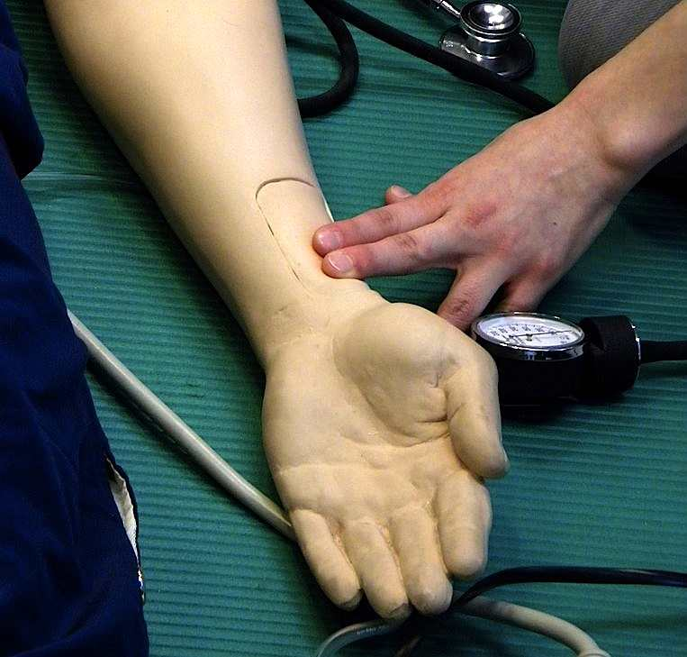
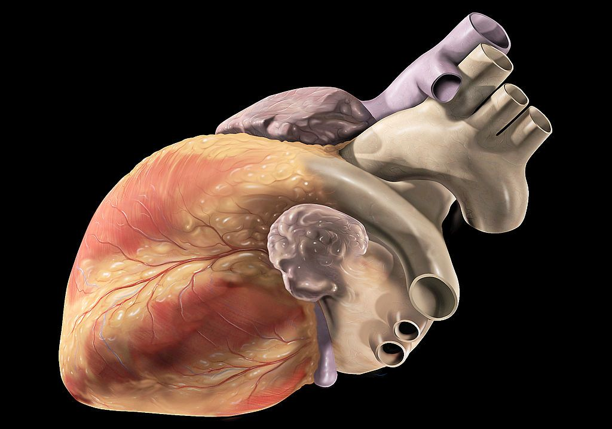

The heart is the muscle in the body that pumps blood around the circulatory system. This continually supplies the body’s cells with the oxygen and nutrients they need.
The heart is a double pump: in one complete circuit of blood in the body, blood passes through the heart twice:
it is pumped from the lower left chamber to take oxygen to the body
after circulation it enters the top right chamber as de-oxygenated blood, moves down to the bottom right chamber, which then pumps it to the lungs to gather more oxygen
from the lungs it passes into the top left chamber, then moves down to the lower left chamber again.
One-way valves between the heart’s chambers ensure the blood only moves the right way.
The human circulatory system. Notice the direction of the arrows, indicating blood flow. Note also that the left and right of the heart are from the viewpoint of the person who’s heart it is: the opposite of left and right on this screen!
The circulatory system has three types of blood vessel. The arteries take oxygenated blood away from the heart. They have thick walls that cope with the high pressure exerted by the pumping heart.
Veins take blood from the body back to the heart. They have thin walls for flexibility, pumping blood forward. Valves inside the vein ensure blood flow is one-way.
Capillaries are tiny blood vessels with walls that are only one cell thick. These thin walls help capillaries pass oxygen/nutrients to the body’s cells.
A cross-section of a human artery
Heart muscle cells are like any other cell in the body: they need oxygen and nutrients from blood. They have their own separate blood supply, this arrives via the coronary arteries.
Heart rate and blood pressure
Blood pressure is the pressure that the blood exerts on artery walls. It is written as two numbers, e.g. ‘115/85 mm Hg’ (115 over 85 millimetres of mercury). The higher number is for the pressure when the heart beats (contracts) and fills the arteries, the lower number is for the ‘resting’ heart, between beats.
Heart rate measures the speed at which our heart beats. For an average person at rest this is typically 70 bpm (beats per minute); teenagers have resting heart rates of up to 100 bpm.
Heart rate is the same as pulse rate. Pulse rate can be measured easily in certain areas of the body: the heart’s pulses/beats are felt through the skin.
Blood pressure is an important measure of general health (more so than heart rate): it relates closely to blood flow in the coronary arteries and the risk of heart attack.
Because people are different, ‘normal’ blood pressure is usually taken to mean any figure within a range, e.g. between 90/60 and 120/80 mm Hg. The same goes for resting pulse rate, e.g. 70–100 bpm.

Measuring pulse rate on a medical dummy. You can check your own pulse by placing two fingers in this position
Heart disease
Heart disease is caused by a gradual build-up of fatty deposits (plaque) on the walls of the coronary arteries. It is the world’s biggest killer disease, affecting millions every year.
The deposits narrow the arteries and may increase heart rate and lead to high blood pressure. The heart needs to work harder to pump the same amount of blood around the body. This can contribute to heart attacks.
Heart disease usually results from long-term lifestyle choices such as high fat diet, lack of exercise, smoking, drinking, and stress. High levels of bad cholesterol (see Section 1.2) contribute to the build-up of fatty deposits in the arteries.
Drugs such as nicotine, cannabis and alcohol can also contribute to heart disease. Nicotine and carbon monoxide (CO) in smoke can harden arteries; heavy alcohol consumption can raise blood pressure.

Coronary arteries are the blood vessels shown in red on this heart’s exterior
A heart attack is a sudden extreme episode of heart disease, which will have been developing for some time. Blood supply to part of the heart is interrupted: some heart cells stop contracting (beating) and die. A heart attack can kill if blood supply to a large part of the heart is interrupted.
A heart attack often correlates to the level of fatty deposits in the blood vessels (the coronary arteries). These deposits, which build up over years, can suddenly restrict blood flow.
However, even healthy people with low blood pressure and excellent lifestyles – such as athletes – can suffer unexpected heart attacks. This may suggest a genetic link.
Indeed some people are genetically more at risk of developing heart disease: they may have naturally high blood pressure, or lack a natural ability to control their bad cholesterol. Recent studies have found specific human gene variants (alleles) that increase the risk of heart disease.
Such studies are carried out on a large scale with thousands of volunteers, representing a good sample of a specific part of the population, e.g. smokers and non-smokers of a particular age, non-smoking lifestyle and ethnic make-up. The study of a population’s health patterns is epidemiology.
Heart disease has become more common in industrialised countries like the UK. In many poorer countries, people such as subsistence farmers eat more natural diets and get plenty of exercise in their daily work: their risk of heart disease is lower.